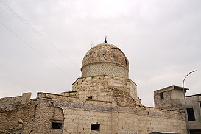

Voorstelling
La Grande Mosquée al-Nouri est une mosquée située à Mossoul en Irak. Elle est notable en raison de son ancienneté et de son minaret penché, surnommé al-Hadba. Sa construction avait été ordonnée par Noureddine Al-Zink en 1172.
الجامع الكبير النوري أو الجامع الكبير أو جامع النوري الكبير هو من مساجد العراق التاريخية ويقع في الساحل الأيمن (الغربي) للموصل. وتسمى المنطقة المحيطة بالجامع محلة الجامع الكبير.
The Great Mosque of al-Nuri, also known as the Nouri Mosque, is a Sunni mosque in Mosul, in the Nineveh Governorate of Iraq, famous for its leaning minaret, which gave the city its nickname "the hunchback". Tradition holds that the mosque was built in the late 12th century, although it underwent many renovations over the years. The mosque withstood various hostile invading forces over its 850-year history until it was destroyed, along with its distinctive minaret, in the 2017 Battle of Mosul.
Musul Ulu Cami, Nurî Camii ya da Nurî Ulu Cami, Musul, Irak'ta tarihi bir cami. Eğik minaresiyle meşhurdur, bundan dolayı Musul şehrinin lakabı "kambur" olarak da bilinmiştir.
Masjid Agung al-Nuri adalah nama sebuah masjid yang terletak di Mosul, Irak. Masjid ini terkenal karena menaranya yang miring, dan mendapatkan julukan "si bungkuk". Tradisi berpendapat bahwa masjid tersebut pertama kali dibangun pada akhir abad ke-12, meskipun telah mengalami banyak renovasi selama bertahun-tahun.
الجامع الکبیر النوری یا الجامع الکبیر یا جامع النوری الکبیر، عراق کی تاریخی مساجد میں سے ایک ہے اور یہ موصل کے دائیں (مغربی) کنارے پر واقع ہے۔ اس جامع کے اردگرد کا علاقہ محلہ الجامع الکبیر کہلاتا ہے۔ یہ مسجد نور الدین زنکی نے چھٹی صدی ہجری میں بنائی تھی، یعنی اس کی عمر تقریباً نو صدیاں ہے۔ یہ موصل میں بننے والی دوسری مسجد تھی، پہلی مسجد جامع اموی تھی۔ اس کی کئی بار مرمت و تعمیرِ نو کی گئی، جس میں آخری بار 1363ھ/1944ء میں مرمت کی گئی۔
Die Große Moschee des an-Nuri ist eine Moschee aus den 1170er Jahren im Westen der irakischen Stadt Mossul. Sie ist nach dem zengidischen Statthalter Nureddin Zengi benannt.
La Gran mezquita de al Nuri fue una histórica mezquita de la ciudad iraquí de Mosul, conocida por su minarete inclinado. Su construcción se remonta a la segunda mitad del siglo XII. Fue destruida el 21 de junio de 2017 por los yihadistas del grupo islamista del Estado Islámico de Irak y el Levante (EIIL) que hicieron explotar la mezquita y el minarete.
La Grande moschea di al-Nuri è stata la principale moschea sunnita di Mosul, Iraq, famosa per il suo minareto pendente, il quale ha preso il soprannome di gobbo. La tradizione vuole che la moschea sia stata costruita per la prima volta nel tardo XII secolo, anche se nel corso degli anni subì numerosi rifacimenti. Il 21 giugno 2017 è stata distrutta dalle forze dell'ISIS in fuga dalla città, durante la battaglia di Mosul.
A Grande Mesquita de Nuri era uma mesquita em Moçul, no Iraque, que, em uma idade aproximada de 850 anos, havia ultrapassado várias forças inimigas hostis ao longo de sua história que não se atrevem a destruí-la. Finalmente, sucumbiu ao vandalismo do grupo terrorista Estado Islâmico do Iraque e do Levante (EIIL) e foi demolido em 2017. Era famoso por seu minarete inclinado, que deu à cidade o apelido de "o corcunda".
De al-Nuri-moskee of Grote Moskee is een moskee in het centrum van de Iraakse stad Mosoel. De moskee werd gebouwd in de 12e eeuw en stond bekend om zijn scheefstaande minaret, bijgenaamd al-Hadba. In 2017 is de moskee vernietigd door ISIS, maar met de steun van de UNESCO wordt hij weer heropgebouwd. In 2025 kwam de minaret gereed.
努爾大清真寺 是伊拉克北部重鎮摩蘇爾主要的清真寺，約建於十二世紀末，並以其傾斜、俗稱「駝子」（الحدباء）的宣禮塔而聞名。此寺在八百五十年間歷經多次戰亂而屹立不搖，直至2017年摩蘇爾戰役期間被毀。
ヌーリー・モスク は、イラクのモスルにある金曜礼拝モスク。モスクはモスル旧市街に位置し、十字軍と戦った英雄ヌールッディーンの創建（1172年）になるため「ヌーリー」の名がある。また、「背中が曲がったやつ」を意味する「ハドバー」という愛称で知られる、傾いたミナレットを持つことで有名であったが、2017年にイスラーム国を自称するサラフィー・ジハード主義者の手により爆破された。
महान अल-नूरी मस्जिद मोसुल, इराक में एक मस्जिद थी। इसकी प्रसिद्धि इसकी झुकी हुई मीनार से थी, जिसने शहर को इसका उपनाम "कुबड़ा" दिया था। माना जाता है कि इस मस्जिद को पहले पहल 12वीं शताब्दी के अंत में बनाया गया था, हालांकि इसके बाद इसका कई बार पुनर्निर्माण किया गया। अपने 850 वर्षों के इतिहास में इस मस्जिद ने शत्रु सेनाओं के बहुत सारे आक्रमण झेले लेकिन अंतत: 21 जून 2017 को इराक और लेवांत के इस्लामिक राष्ट्र (आईएसआईएल) ने मोसुल की लड़ाई के दौरान इसे नष्ट कर दिया।
Собо́рная мече́ть ан-Нури — одна из исторических мечетей Ирака.
Nhà thờ Hồi giáo lớn al-Nuri là một nhà thờ Hồi giáo ở Mosul, Iraq. Nó nổi tiếng với minaret nghiêng, mà đã cho thành phố biệt danh "người gù lưng". Truyền thống cho rằng nhà thờ Hồi giáo này được xây dựng lần đầu tiên vào cuối thế kỷ 12, mặc dù nó đã được tân trang lại nhiều lần theo thời gian. Vượt qua các lực lượng xâm lược thù địch trong 850 năm qua, nó đã bị phá hủy bởi Nhà nước Hồi giáo Iraq và Levant (ISIL) vào ngày 21 tháng 6 năm 2017, trong trận Mosul.
มัสยิดญามีอันนูรี หรือ มัสยิดใหญ่อันนูรี เป็นอดีตมัสยิดในโมซูล ประเทศอิรัก เป็นที่รู้จักจากหออะซานเอียง ซึ่งเป็นที่มาของชื่อเล่นของเมืองโมซูลว่า "คนค่อม" ธรรมเนียมระบุว่ามัสยิดสร้างจึ้นครั้งแรกในปลายศตวรรษที่ 12 และถูกทำลายระหว่างการปะทะที่โมซูลในปี 2017 โดยกองทัพอิรักระบุว่าไอซิล (ISIL) เป็นผู้ก่อการทำลายมัสยิด
Al-Nurimoskén är en moské i Mosul i Irak. Den uppfördes åren 1172–1173. Ett typiskt kännetecken för moskén var den lutande minareten.
Op de kaart
Documenten en links
- Wikipédia — Français
- Wikipédia — العربية
- Wikipédia — English
- Wikipédia — Türkçe
- Wikipédia — Bahasa Indonesia
- Wikipédia — اردو
- Wikipédia — Deutsch
- Wikipédia — Español
- Wikipédia — Italiano
- Wikipédia — Português
- Wikipédia — Nederlands
- Wikipédia — 中文
- Wikipédia — 日本語
- Wikipédia — हिन्दी
- Wikipédia — Русский
- Wikipédia — Tiếng Việt
- Wikipédia — ไทย
- Wikipédia — Svenska
- Wikidata — Q5599605
Gegevens: Wikidata (CC0), elke 3 maanden bijgewerkt. Het jaar is de oudst bekende bouwdatum van het gebouw: voor een gebouw dat later een moskee werd (zoals de Hagia Sophia), is het die van het oorspronkelijke gebouw. Foto's: Wikimedia Commons, maker en licentie op de pagina van elke foto.